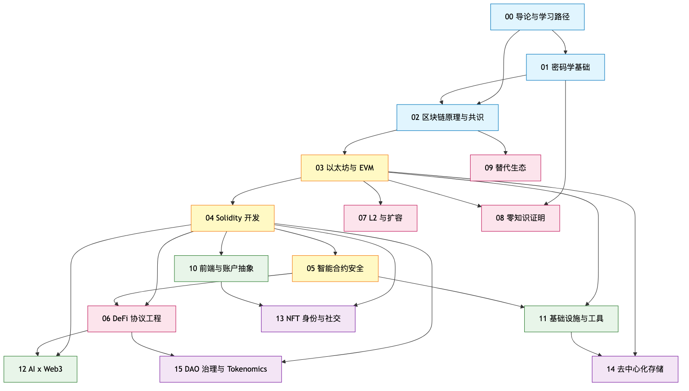

面向已有 1+ 年软件工程经验、第一次系统进入 Web3 的工程师。
后续章节默认你已掌握以下能力，任一项空白先回去补：
rebase 与 merge 差别。man、写 bash 脚本、理解 PATH。venv / pyenv。JOIN、懂索引与事务。SaaS 收 99 美元走的链路：用户卡 → 发卡行 → Visa/Mastercard → 收单行 → Stripe → 你的账户。Stripe 收 2.9%+30¢ 是承担对手方风险，全链依赖 1970 年代银行报文协议（SWIFT、ACH、SEPA）——没有一段是互联网原生的。
互联网解决"信息分发"，从未解决"价值确权与结算"。"在网上转钱"= 把信息发给银行让他们改数据库。
1990 年代 cypherpunk（Hal Finney、Adam Back、Wei Dai、Nick Szabo）花二十年回答：
能不能不依赖任何单一可信第三方，让陌生人互相支付？
双花：同一笔钱花两次。物理现金不可能（递出去就少了），bit 可复制——复制钱包文件就有两份钱。传统答案是中心化记账，代价是可冻结、可拒跨境、可收费。
2008-10-31 Satoshi Nakamoto 发表 9 页论文 Bitcoin: A Peer-to-Peer Electronic Cash System（bitcoin.org/bitcoin.pdf）。解法：
关键洞察：用"经济激励 + 物理算力"替代"中心化信任"——人类第一次让陌生人就单一全局状态达成共识而不依赖中央权威。
[ 中心化账本 ] [ 分布式账本 ]
+---------+ +-----+ +-----+ +-----+
| 银行 | |节点A| -- |节点B| -- |节点C|
| DB | +-----+ +-----+ +-----+
+---------+ \\ | //
/ | \\ \\ | //
/ | \\ +-- 同步同一份链 --+
用户 用户 用户 |
+-- PoW/PoS 决定下一区块 --+
可信度来自： 可信度来自：
- 监管/牌照 - 密码学（哈希链不可逆）
- 公司声誉 - 经济激励（攻击成本 > 收益）
- 法律追索 - 多方独立验证
比特币脚本故意图灵不完备：无循环、不能调用合约。每笔 tx 成本可静态分析、消除 DoS，代价是只能写转账，写不出借贷、衍生品。
2013-11-27 Vitalik（19 岁）发布《以太坊白皮书》（ethereum.org/whitepaper），向 Bitcoin 提议加图灵完备脚本被否后另起炉灶。
以太坊三大创新：
mapping(address => Account)，每账户含 nonce、balance、storage、code，让"持有状态"成为一等公民。主网 2015-07-30（Frontier）上线。十余年后市值、开发者数、TVL 均为除 Bitcoin 外第一。
| 维度 | UTXO（Bitcoin） | 账户（Ethereum） |
|---|---|---|
| 状态表达 | 未花费输出列表 | 全局 mapping |
| 交易并行 | 天然并行 | 顺序执行（storage 冲突约束） |
| 编程便利度 | 低（追踪 input 集合） | 高（直接读写状态） |
| 隐私 | 较好（每笔可换地址） | 较差（地址重用普遍） |
| MEV 复杂度 | 由排序权与可组合性共同决定，与状态模型只弱相关 | 同上（块内可任意排序 + 高度可组合 → 实践中极高） |
Cardano、Sui、Aptos 等用变种 UTXO（eUTXO、Object-centric）追求并行执行优势，根源在此。
2016-04-30 The DAO 上线，28 天募集 1150 万 ETH（约 1.5 亿美元，当时最大众筹）。06-17 攻击者用重入（reentrancy）抽走 360 万 ETH（gemini.com/cryptopedia/the-dao-hack）——漏洞两周前已被 Peter Vessenes 警告，团队无视。
社区两难：回滚违背"代码即法律"；不回滚等于让攻击者持有以太坊十分之一。2016-07-20（区块 1,920,000）硬分叉，保留原链的少数派成为 Ethereum Classic（ETC）。
两条工程教训：重入会要命（催生 CEI 模式与 ReentrancyGuard，这是 05-安全作为 04-Solidity 硬下游的根因）；代码不是法律——社会共识才是，这是协议设计至今的根本张力。
2022-09-15 The Merge（2015 即规划）：质押资本替代消耗算力。验证者质押 32 ETH，按权重抽签出块，作恶被 slash。能耗 -99.95%，引入长程攻击、流动性质押集中化、验证者地理集中等新问题。
Vitalik 2021-12 Endgame（vitalik.ca/general/2021/12/06/endgame.html）：
"所有可扩展的链最终走向：区块生产中心化、区块验证去中心化、强反审查机制兜底。"
MEV、PBS、DAS 都是这论点的工程化，02-共识 / 07-L2 / 11-基础设施反复回到这条主线。
2025-05-07 Pectra 上线（11 个 EIP），EIP-7702 让 EOA 通过 SetCode authorization 持久委托到合约代码（直到下一次 SetCode 覆盖或委托到 0x0 撤销）（blog.ethereum.org/2025/04/23/pectra-mainnet）。配合 ERC-4337：用 USDC 付 gas、社交恢复、批量执行、dApp 代付。钱包 UX 追上 Web2。10-前端模块展开。
2008-10-31 Satoshi 发布 Bitcoin 白皮书
2009-01-03 Bitcoin 创世区块（Genesis Block）
2013-11-27 Vitalik 发布 Ethereum 白皮书（19 岁）
2015-07-30 Ethereum 主网（Frontier）上线
2016-06-17 The DAO 被攻击（5000 万美元当时）
2016-07-20 Ethereum 硬分叉，ETC 诞生
2017-12 CryptoKitties 撑爆 Ethereum，激发 L2 研究
2020-06 "DeFi Summer" 启动（Compound 治理代币空投）
2020-12-01 Beacon Chain 上线（Ethereum PoS 共识层启动）
2022-03-23 Ronin Bridge 被盗 5.4 亿美元（Lazarus Group）
2022-08-01 Nomad Bridge 被盗 1.9 亿美元（群众参与的 hack）
2022-09-15 The Merge：Ethereum 转 PoS
2023-03 ERC-4337 v0.6 正式部署到主网（v0.7 于 2024-04 部署，v0.8 迁移中）
2023-07-30 Curve Vyper 编译器漏洞，约 5200 万美元损失
2024-03-13 Dencun 升级（EIP-4844 blob，L2 成本断崖下跌）
2025-05-07 Pectra 升级（EIP-7702 账户抽象进 EOA）
2025-11-11 Mastering Ethereum 2nd Edition 出版
2026-Q1 Glamsterdam 升级筹备（block-level access list、ePBS）
1.8.1 一句话解释为什么 Bitcoin 选"图灵不完备"、Ethereum 选"图灵完备"都是有意为之。
答案：Bitcoin 目标是单一可信价值传输，图灵不完备让每笔 tx 成本可静态分析、消除 DoS 攻击面；Ethereum 目标是任意可信计算，图灵完备 + gas 把"程序终止性"从静态保证变成动态保证（gas 耗尽就 revert），换来表达能力。两者不是优劣，是目标不同。
1.8.2 The DAO 后为什么社区不能选"不动"？用社会学而非技术回答。
答案：5000 万美元占当时 ETH 总市值过大，不分叉等于"以太坊从此被一个匿名攻击者持有十分之一"。当时社区主体是技术 + 投资者重叠，财富与项目存亡绑定。"代码即法律"在抽象上吸引人，但现实成本足够大时社会共识必然推翻它。此事永久改变 Ethereum 文化——之后每次重大升级都隐含"社会共识能否推翻技术决定"。
1.8.3 给用过 Stripe、没碰过 Web3 的同事 90 秒讲清"为什么需要智能合约"，不用"去中心化"，举具体例子。
答案样例：Stripe 解决信用卡到你银行账户的资金路径，但如果 Stripe 拒绝（俄罗斯客户、赌博、高风险跨境），你就完了。智能合约是公开账本上的程序，谁都能调用、谁都能验证执行结果，不需要 Stripe 批准。例子：全球众筹合约，规则"到期没达标自动退款"，没有平台能扣资金或改规则。它不替代 Stripe，是给 Stripe 不能做的场景一个可信选项。

蓝色（00/01/02）是所有方向都绕不开的基础；黄色（03/04/05）是 95% 工程师吃饭的以太坊核心栈，必须按 EVM → Solidity → 安全 的顺序串起来；粉色（06/07/08/09）是协议级专精，按你的方向只挑一条深耕；绿色（10/11/12）是横向能力，任意阶段都能并行接入；紫色（13/14/15）是应用层，至少熟一个才能做出真正落地的产品。
01 密码学 → 02 共识、08 ZK：椭圆曲线、哈希、Merkle 证明是后两者的语言。不懂 SHA-256 抗碰撞性就不懂 PoW 为何安全；不懂椭圆曲线就讲不清 ECDSA 与 BLS 差别；不懂 Merkle 树就读不懂 state proof。
03 EVM → 04 Solidity 是初学者最常跳、后续最痛的一条。Solidity 长得像 JS，让人误以为可以绕过 EVM。结果是把临时变量错写成 storage，gas 超限两个数量级；栈、memory、storage、calldata 四种数据位置分不清，gas 永远多花。
04 Solidity → 05 安全 → 06 DeFi 是顺序关系。不会写合约就看不懂漏洞，Ethernaut（ethernaut.openzeppelin.com，30+ 关，2025-09 新增 Bet House / Elliptic Token / Cashback / Impersonator Two 四关）默认你能读懂字节码级行为。而 DeFi 是漏洞收割机，没刷完 Ethernaut 1-15 就写资金路径等于裸奔上战场——rekt.news 每年前 10 名累计损失常超 30 亿美元。
07 L2 在 03 之后理论上就能学，但 L2 跑的是 DeFi，先 06 后 07 才连贯；10 前端 04 后即可上手，对安全的要求是"知边界"而非"能审计"；09 替代生态里，Solana 需要 02 + Rust，Move 需要类型论与资源语义，都建议 04 之后再展开。
横向三模块（10/11/12）决定的是项目能否上线、能否被使用。10 前端决定有没有人用——漂亮 Solidity 配丑前端没人点开；11 基础设施决定能否扛住主网，anvil 100% 通过不代表主网没有 RPC 限速、indexer 延迟、监控缺失这类事故；12 AI x Web3 决定生产力上限，单人 + Cursor + Claude 在 2026 年能做 2022 年五人团队的事，前提是懂 §11 的边界。
紫色应用层（13/14/15）不是必修，而是三种产品形态：13 是身份与社交（ENS / Farcaster / Lens / ERC-6551 TBA，to-C 产品绕不开）；14 是去中心化存储（NFT metadata 与 DA 层都需要，IPFS / Filecoin / Arweave / Walrus 经济模型差异巨大）；15 是 DAO 治理与 Tokenomics（代码 + 经济学 + 法律三栖，难点在 token design 与机制设计）。这是垂直应用方向，对应招聘市场上的 NFT / DAO / storage engineer 岗位，但不是入行门槛。
先去 06 DeFi、再回补 04/05 这条路走不通。但你可以用半天时间预习：去 Uniswap swap 一次、去 Aave 存 USDC、打开 DevTools 看前端如何包装链交互。每个概念 10-30 分钟，加起来不超过 2 小时——目的是建立直觉，正式学习仍然按依赖图来。
Web3 资源量大但良莠不齐：视频会停更、课程会停留在旧版本库、付费课与免费课的差距并不与价格成正比。下面按"免费课 → 付费 Bootcamp → 书 → 信息渠道 → 推特列表"分层，每层只挑当前仍在持续更新、且产物可验证的渠道。
| 平台 | 主理人/机构 | 风格 | 强项 | 弱项 | 检索日确认 |
|---|---|---|---|---|---|
| Cyfrin Updraft | Patrick Collins / Cyfrin | Hands-on，Foundry 优先 | 安全审计、DeFi 实战、ZK Solidity | 视频偏长，需自己加速 | 2026-04 仍 100% 免费，可获 SSCD+ 证书 |
| Speedrun Ethereum | Austin Griffith / scaffold-eth | Challenge-based | 全栈 dApp 直觉、scaffold-eth 框架 | 安全章节较弱 | 2026-04 共 10 关含 ZK Voting |
| Alchemy University | Alchemy | 短视频 + quiz | JS for Ethereum、7 周 Bootcamp | 内容停留较早，更新偏慢 | 2026-04 仍可访问，免费 |
| LearnWeb3 | LearnWeb3 DAO | Cohort-based | 配套 Discord 社区、有 hackathon | 内容质量参差 | 2026-04 仍活跃 |
| Solana Developer Bootcamp 2024 | Solana Foundation + 三位 DA | 20 小时长视频 | Solana 全栈最权威免费 | 仅 Solana | 2026-04 仍是最新官方版 |
| Aptos Learn / Move Book | Aptos Labs / Mysten Labs | 交互式 | Move 入门最佳免费选项 | 仅 Aptos / Sui | 2026-04 持续更新 |
| 平台 | 价格（2026） | 时长 | 适合谁 | 备注 |
|---|---|---|---|---|
| RareSkills Solidity Bootcamp | $5,850（3 个月分期） | 13 周 | 已会基础 Solidity 想进阶 | 下期 2026-06-04，每周 1-on-1 review |
| RareSkills ZK Bootcamp | 类似定价 | 16 周 | ZK 工程师 | 主理人 Jeffrey Scholz |
| RareSkills Uniswap V3 Bootcamp | 单独定价 | 8 周 | 想读懂 Uniswap V3/V4 | 数学密集 |
| Encode x Solana Bootcamp | 免费（Solana Foundation 赞助） | 6-8 周 | Solana 入门 | 周期性开课 |
| Atrium Academy Uniswap Hook Incubator | 免费（资助）+ 申请制 | 9 周 | 已是 Solidity 中级 | 黑客松结尾 |
| Secureum Bootcamp | 免费 | 不固定 | 安全方向 | Epoch∞ 在 2025-08 暂停，但 RACE 题库与 YouTube 录像永久保留 |
工程师注脚 3.A： Secureum Epoch Infinity 已暂停（secureum.xyz），但 RACE 1-41 题库仍是行业事实标准学习材料。
按方向拉一个 list，不刷主页：
无论选哪条方向，都先完成 Ethernaut 1-15 关 + 读完 SWC Registry——这是最低安全直觉。下面五条是传统方向（合约、安全、前端、协议、基础设施），两条是应用层方向（DAO、NFT 社交）。
主路径： 04 → 05 → 06。重点深耕 Foundry、不变量测试、gas optimization。
关键产物： 3 个开源协议的有意义 PR、1 个自己设计的 ERC 提案 draft、1 份 1000 行级别的协议代码 + 测试套件。
主路径： 04 → 05 → 06 → CTF/竞赛。
进阶顺序： Cyfrin Updraft Security Course → Damn Vulnerable DeFi v4 → Ethernaut 全关 → Secureum RACE 题库自学 → Code4rena / Sherlock / Cantina 公开赛 → Immunefi bounty。
竞赛平台对比（2026 Q1 实际状况）：
| 平台 | 模式 | 项目预算 | 备注 |
|---|---|---|---|
| Code4rena | warden 竞争 | $20K-$200K+ | 2025 被 Zellic 收购，仍是参与人数最多的平台 |
| Sherlock | 提供事后保险 | $20K-$200K+ | 项目愿意付保费换"被审还被黑"时的赔付 |
| Cantina | 审计员需自己 stake | 灵活 | 信号更强但门槛高 |
关键产物： 每周读 3-5 份公开审计报告（OpenZeppelin、Trail of Bits、Spearbit）并写 1 段总结，半年内累计 50+ 份。
主路径： 04（够用即可）→ 10 → 11。
默认栈（2026 production-ready）： Next.js 15 + React 19 + wagmi v2 + viem v2 + RainbowKit + Tailwind + shadcn/ui + TanStack Query + Privy/Dynamic（embedded wallet）。
关键产物： 3 个公开 dApp，至少 1 个含 account abstraction 流程、至少 1 个有真实用户。
主路径： 01 → 02 → 03 → 07/08 选一。研究院线，门槛高薪资高。
推荐项目： Ethereum Protocol Fellowship（EPF，2025 年 Cohort 6，blog.ethereum.org/2025/04/10/epf-6）或 Ethereum Protocol Studies 2026（2026-02 启动，含 cryptography、lean consensus、zkEVM 三 track）。
关键产物： 1 个 client 的非平凡 PR、1 份 EIP draft 或研究 note、ethresear.ch 上 1-3 个有讨论的帖子。
主路径： 02 → 03 → 11，可与 12 AI x Web3 联动。
方向： RPC 服务、indexer（Subgraph、Goldsky、Envio）、MEV searcher/builder、bridge、节点托管、数据管道。
2026 客户端选择参考： - 执行层（EL）：Geth（41% 市占率）、Reth（2026-04 发布 2.0，约 20-25% 市占且高速增长，Base 已弃 Geth 用 Reth，OP 主网 2026-05 弃 op-geth）、Erigon（archive 节点 3-3.5 TB，远小于 Geth 的 18-20 TB）、Nethermind、Besu。 - 共识层（CL）：Lighthouse、Prysm、Teku、Nimbus、Lodestar——多客户端是 Ethereum 安全的根。
关键产物： 1 个公开运行的服务（自己维护的 indexer / 公共 RPC / MEV bot 数据看板）。
主路径： 04 → 06 → 15。代码 + 经济学 + 法律三栖。
当前真实岗位（2026 Q1）： MakerDAO、Compound Core、Uniswap Foundation、Optimism Foundation、Aragon、Tally、Snapshot Labs 持续招聘（web3.career/web3-companies/makerdao）。
技术栈： - Governor 系：OpenZeppelin Governor v5.5（含 timelock + votes extension）、Compound Governor Bravo、Aave Governance v3。 - 框架：Aragon OSx（modular，Mode L2 已用其 vote-escrow + gauge 治理模型）、Zodiac（Safe 上的治理模块）、Snapshot X（链上链下结合）。 - 前端 + 数据：Tally（Governor 标准 UI，Uniswap/Gitcoin 都在用）、Boardroom、Karma。 - 国库管理：Safe + Den（多签）、Llama、Karpatkey（DAO treasury 管理服务）。
关键产物： 1 个原创治理提案被真实 DAO 采纳；1 份 token launch 白皮书（含 vesting schedule、quorum、proposal threshold 推导）；1 个开源治理模块 PR。
主路径： 04 → 10 → 13。to-C 产品 + 链上身份，最接近 Web2 全栈。
技术栈： - NFT 标准：ERC-721、ERC-721A（Azuki，gas-efficient batch mint）、ERC-1155（multi-token）、ERC-2981（royalties）、ERC-4906（metadata refresh）、ERC-6551（Token Bound Accounts，让 NFT 自身成为账户）。 - 身份层：ENS、Farcaster ID（FID，2026-01 由 Neynar 接管协议运营）、Lens v3（2025 已迁移到自己的 L2，含 65 万 profiles + 125GB social graph）、Sign-In With Ethereum（SIWE，EIP-4361）。 - 社交层：Farcaster Hubs + Frames v2（嵌入式 mini-apps）、Lens Open Action、XMTP（链上消息）。 - 存储：IPFS / Arweave（NFT metadata 必须永久化，OpenSea 不替你保存）。
关键产物： 1 个有真实用户的 NFT mint 项目（Sepolia / Base / Zora）；1 个 Farcaster Frame 或 Lens Open Action；1 篇关于身份层的技术博客。
ENS 把名字 mapping 到 address；ERC-721 是身份单元；ERC-6551 让 NFT 成为账户持有 token、签 tx、参与治理。堆叠起来 = Web3 to-C 基础设施，2026 年覆盖社交、游戏、忠诚度、票务、艺术品、IP 授权。
| 路线 | 来源 | 形态 | 检索日 |
|---|---|---|---|
| roadmap.sh / Blockchain | Kamran Ahmed | 静态 SVG roadmap | 2026-04-27 |
| Cyfrin Updraft Career Tracks | Patrick Collins / Cyfrin | 6 条 career tracks（Foundations / Solidity / Vyper / DeFi / Security / Wallets / ZK） | 2026-04-27 |
| LearnWeb3 DAO Degrees | LearnWeb3 DAO | 4 条 tracks：Freshman / Sophomore / Junior / Senior | 2026-04-27 |
| Alchemy University EDB | Alchemy | 7 周 Ethereum Developer Bootcamp（Week 1 ECDSA、Week 2 storage） | 2026-04-27 |
| 100xDevs Cohort 3.0 Web3 | Harkirat Singh | 直播 + 录像，含 EVM + Solana + Rust | 2026-04-27 |
| ChainShot（已并入 Alchemy U） | ChainShot / Alchemy | 10 周 instructor-led | 2026-04-27 |
把六份路线图合在一起看，重叠的部分就是行业事实标准的入门核心——加密原语（hash / ECDSA / Merkle）、EVM 与 gas 模型、Solidity 与 ERC-20/721、一种测试框架（Foundry 或 Hardhat）、Uniswap V2 精读、一次完整 dApp 全栈、一套安全练习（Ethernaut 或 Damn Vulnerable DeFi）。00-12 模块覆盖了这些全部内容。
| 主题 | roadmap.sh | Cyfrin | LearnWeb3 | Alchemy U | 100xDevs | 本指南 |
|---|---|---|---|---|---|---|
| Bitcoin 单独章节 | ✓ | × | × | × | × | △（在 01-02） |
| Vyper | × | ✓ | × | × | × | △（在 04） |
| Solana / Rust | × | ✓ | × | × | ✓ | ✓（M09） |
| Move（Aptos/Sui） | × | × | × | × | × | ✓（M09） |
| ZK / Noir | × | ✓ | × | × | × | ✓（M08） |
| L2 部署对比 | △ | △ | △ | × | × | ✓（M07） |
| 账户抽象 ERC-4337/7702 | × | △ | × | × | × | ✓（M10） |
| MEV / 基础设施 | × | × | × | × | × | ✓（M11） |
| AI x Web3 | × | × | × | × | × | ✓（M12） |
| NFT 身份与社交 | × | × | △ | × | × | ✓（M13） |
| 去中心化存储 | × | × | △ | × | × | ✓（M14） |
| DAO 治理 | × | × | △ | × | × | ✓（M15） |
| Tokenomics | × | × | × | × | × | ✓（M15） |
✓ = 完整覆盖，△ = 简略提及，× = 缺失。
| 模块 | 前置 | 核心产出物（可验证） | 推荐时长 |
|---|---|---|---|
| 00 导论 | 无 | 写下"为什么学 Web3"的 3 条具体动机 + 6 个月目标 + 选定一条路径 | 0.5 周 |
| 01 密码学 | 00 | 用 Python/TS 实现：SHA-256 与 Keccak-256 对比、ECDSA 签名验证、Merkle proof 验证 | 1 周 |
| 02 共识 | 01 | 本地起 PoS 双客户端（Geth+Lighthouse 或 Reth+Lodestar），观察 finality | 1 周 |
| 03 EVM | 02 | 用 evm.codes 跟踪 1 笔 ETH 转账 + 1 笔 ERC-20 transfer 的全部 opcode | 1 周 |
| 04 Solidity | 03 | Foundry 项目模板，含 ERC-20、ERC-721、unit test、fuzz test，覆盖率 ≥ 90% | 3 周 |
| 05 安全 | 04 | Ethernaut 1-25、Damn Vulnerable DeFi v4 至少 5 关 writeup | 3 周 |
| 06 DeFi | 04+05 | Uniswap V2 + V3 + V4 hook 逐行 reading note，自己写一个 minimal AMM | 3 周 |
| 07 L2 | 03 | 同一份合约部署到 OP Stack、Arbitrum Nitro、zkSync Era 三条链，对比 gas 与延迟 | 2 周 |
| 08 ZK | 01+03 | 用 Circom 写 Merkle membership proof、用 Noir 写 password check | 3 周 |
| 09 替代生态 | 02 | Solana：跑通 Anchor 的 token + NFT；可选 Move（Aptos/Sui）或 Cosmos SDK | 2-4 周 |
| 10 前端 | 04 | scaffold-eth-2 + wagmi + ERC-4337 smart account 完整流程 | 2 周 |
| 11 基础设施 | 03+05 | 自跑 Erigon/Reth 节点、起 Subgraph、可选 Flashbots 仿真 | 2-3 周 |
| 12 AI x Web3 | 04+06 | Claude/Cursor 写合约 → 自审 → 对比差异，写一篇 lessons learned | 1-2 周（持续观察） |
| 13 NFT 身份与社交 | 04+10 | 用 Solady 721 + 2981 写 mint 合约 + IPFS metadata + 1 个 Farcaster Frame 或 Lens Open Action | 2-3 周 |
| 14 去中心化存储 | 03+11 | 同一份 NFT metadata 上 IPFS / Filecoin / Arweave / Walrus 四种方式，对比成本与可恢复性 | 1-2 周 |
| 15 DAO 治理与 Tokenomics | 04+06 | OpenZeppelin Governor v5.5 部署 + Tally 集成 + 1 份 token launch 白皮书 + 1 个真实 DAO 提案 | 3 周 |
nonReentrant 去掉），看测试失败。改坏比写对学到的多。forge test -vvvv 读完整 trace；或放 testnet 让钱包真签一次——确认按钮时你会注意到 gas、nonce、chainId 等平时被抽象的细节。挑本周一个新概念，假装给 Web2 后端讲——讲不清楚 = 没真懂。例：90 秒讲清"Merkle Patricia Trie 是什么及以太坊为何用它"，讲不清就回读 ethereumbook 第 6 章。
每读一个协议先问"哪些状态绝不能违反？"，写成 Foundry invariant test 跑给自己看——强迫你用形式化语言描述协议行为，远比看视频深刻。
经典样本：
- Uniswap V2：swap 前后 k = x * y 不减（无手续费情况）。
- ERC-20：sum(balanceOf(每地址)) == totalSupply()。
- Compound v2：sum(underlying value × 折扣因子) >= sum(borrowed value)。
- ERC-4626 vault：totalSupply == sum(LP shares)，用 ghost variable 在 handler 中累加跟踪。
forge test --match-test invariant_* 关键参数：runs（调用序列条数）、depth（每条序列长度）。默认 runs=256, depth=15 太弱，生产代码至少 runs=5000, depth=50。开 show_metrics=true 查哪些 handler revert 比例过高——handler 不该 90% 被 vm.assume 跳过，否则 fuzzer 在浪费 CPU。
教程的 transfer() 永远是 5 行 happy path。OpenZeppelin ERC-20 v5.5 是 200 行，藏着权限校验、重入防护、storage gap、UUPS proxy、namespaced storage（ERC-7201）。每周读 500-1000 行生产代码：
读不懂就停，去搜对应 EIP 或 issue 讨论。
GitHub profile、Twitter/Farcaster、Notion 学习日志保持公开。公开不是为了流量，而是给招聘方与同行一个查证你产出的入口——这也是 Web3 招聘市场默认的工作方式。
所有运行时都走版本管理器，避免被项目锁死在过期编译器上。本节命令按 2026-04-27 实测整理。
macOS 14+（Apple Silicon 优先，Foundry 与 Solana CLI 在 ARM64 上速度显著更快）或 Ubuntu 22.04 / 24.04 LTS。Windows 用户用 WSL2 + Ubuntu，不要直接用 Git Bash 跑 Foundry——你会在文件路径与 PATH 上踩到无数坑。
nvm，同时装 Node 20 LTS + 22 LTS（wagmi v2/viem v2 要求 ≥18，18 已 maintenance）。pyenv，Slither/Mythril/ape 要 3.10+。rustup，nightly + stable 双装（Solana/Anchor/Reth/Foundry 源码编译）。solc-select 或 Foundry 自带切换。不要 brew install solc——brew 只装最新版，老项目会被卡住。foundryup。生产项目锁版本：foundryup --install <commit>。# === EVM 工具链 ===
# Foundry（forge / cast / anvil / chisel）
# 官方安装地址 2026-04 仍是 paradigm.xyz，最终域名 getfoundry.sh 已并入
curl -L https://foundry.paradigm.xyz | bash
foundryup
# Hardhat 3（2025-08 进入 production，2026-02 v3.1.12，性能关键路径用 Rust 重写）
# 项目内：
pnpm add -D hardhat @nomicfoundation/hardhat-toolbox
# 全局缩写：
npm i -g hardhat-shorthand # 之后用 hh 代替 npx hardhat
# 静态分析
pipx install slither-analyzer
cargo install aderyn # Cyfrin 的 Rust 实现，比 Slither 快 10x
npm i -g @halmoslabs/halmos # 形式化 / symbolic execution
# === Solana 工具链 ===
# Solana CLI（注意：2025 起从 solana.com 迁到 release.anza.xyz）
sh -c "$(curl -sSfL https://release.anza.xyz/stable/install)"
# 或锁定版本（2026-04 stable 是 v3.1.9）：
sh -c "$(curl -sSfL https://release.anza.xyz/v3.1.9/install)"
# Anchor（Solana 智能合约框架）
cargo install --git https://github.com/coral-xyz/anchor avm --locked
avm install latest && avm use latest
# === 节点客户端（按需）===
# Reth 2.0（Paradigm 出品，Rust 写，2026-04 发布 v2.0）
# 选项 1：从 GitHub release 下二进制
# 选项 2：源码编译（需 Rust）
git clone https://github.com/paradigmxyz/reth
cd reth && cargo install --locked --path bin/reth --bin reth
# Lighthouse（Sigma Prime，Rust，CL 客户端）
curl -LO https://github.com/sigp/lighthouse/releases/latest/download/lighthouse-x86_64-unknown-linux-gnu.tar.gz
# === ZK 工具链 ===
# Circom（Iden3）+ snarkjs
npm install -g snarkjs
# Circom 需 Rust：
git clone https://github.com/iden3/circom && cd circom && cargo install --path circom
# Noir（Aztec）
curl -L https://raw.githubusercontent.com/noir-lang/noirup/main/install | bash
noirup
# === Move 工具链（按需）===
# Sui CLI
brew install sui # macOS
# 或源码：
cargo install --locked --git https://github.com/MystenLabs/sui.git --branch testnet sui
# Aptos CLI
brew install aptos
任何要部署到主网的项目，foundry.toml 必须固定 solc_version 与 evm_version，package.json 必须有 lockfile，Cargo.toml 必须有 Cargo.lock。Curve Vyper 事故的部分原因就是项目允许浮动编译器版本。
# foundry.toml 示例
[profile.default]
src = "src"
out = "out"
libs = ["lib"]
solc_version = "0.8.28"
evm_version = "cancun" # 2026-04 主网 EVM 版本
optimizer = true
optimizer_runs = 10_000
via_ir = true # 生产代码强烈建议开启
[invariant]
runs = 5000
depth = 50
fail_on_revert = false
show_metrics = true
.vscode/settings.json 里把 solidity.formatter 设为 forge 而非默认。nvim-treesitter + solidity grammar，配 solidity-language-server。至少注册两个：Alchemy + Infura（主备）；想 self-host 可以跑 Reth（执行层）+ Helios（light client）。
关键习惯：永远不要在前端代码里 hardcode RPC URL，用环境变量。前端泄露的 API key 会被刷爆配额。
私钥绝不进 git。流程：
.env 加 .gitignore。direnv 自动加载 .env，进入目录就生效。# 把私钥加密存到 keystore（一次设置）
cast wallet import deployer --interactive
# 之后部署时
forge script Deploy.s.sol --account deployer --sender 0xYourAddr --broadcast
四个风险：（1）任何能读磁盘的进程可拿走；（2）shell history 记录；（3）CI log 泄露；（4）scp 中间人截获。Foundry --account 签名时弹 password prompt 无法绕过——这正是安全价值所在。
漏洞类型： 重入（reentrancy）。
根因： splitDAO() 在状态更新前调用用户合约 fallback，攻击者 fallback 反复调用 splitDAO，每次通过同样余额校验，把同一笔 ETH 提多次。
工程影响： 催生 CEI 模式与 OZ ReentrancyGuard。漏洞两周前已被警告，团队无视——外部安全反馈不接受，攻击者帮你接受。
漏洞类型： 多签私钥被社工。
根因： 9 节点取 5 签，Sky Mavis 持 4 个。Lazarus Group 用 LinkedIn fake job offer 钓鱼拿到 4 签，再利用 Axie DAO 旧权限拿第 5 签。事后 6 天才被发现（elliptic.co/blog/540-million-stolen-from-the-ronin-defi-bridge）。
工程影响： 跨链桥是 Web3 最高风险基础设施；m-of-n 签名者必须真正地理与组织分散（不分散的"多签"是单签的 LARP）；链上余额+桥进出量必须实时报警。
漏洞类型： routine upgrade 把 zero hash 当成 trusted root。
根因： confirmAt[bytes32(0)] = 1 导致 acceptableRoot(bytes32(0)) 永远返回 true，任何"未证明"的 message 均通过校验。首笔 exploit tx 公开后 2 小时内 300 个地址跟进（medium.com/immunefi/hack-analysis-nomad-bridge-august-2022）。
工程影响： upgrade 必须做 storage layout diff；零值不应被赋予特殊语义（mapping 默认全零 ≠ "未设置"）；公开 exploit tx = 公布漏洞，响应窗口仅数分钟。
漏洞类型： 编译器级，Vyper 0.2.15/0.2.16/0.3.0 的 @nonreentrant 存储槽分配错误。
根因： 不同 lock 字符串被分配到不同 slot 而非共享，跨函数重入保护失效。Curve 代码逻辑正确，但编译器生成的字节码错误（hackmd.io/@vyperlang/HJUgNMhs2）。
工程影响： 小众语言依赖编译器更需谨慎；编译器版本必须锁死；任何重入防护逻辑要有 invariant test 在 forked mainnet 验证。MEV searcher 双面角色：白帽抢救 1670 万退还协议，黑帽抢先攻击多池。
| 事故 | 根本教训 | 对应学习模块 |
|---|---|---|
| The DAO | 永远先 effects 后 interactions | 04, 05 |
| Ronin | 多签必须真分散 + 实时监控 | 11 |
| Nomad | upgrade 要做 storage diff | 04, 06 |
| Curve | 编译器版本要锁，重入防护逻辑要 invariant 验证 | 05, 06 |
行业每周都在变，但能改变你写代码方式的事件每月不超过两条。日常不超过 30 分钟扫一遍标题，深度阅读集中在周末 2 小时——这样既不漏掉协议升级，又不被推特噪音掏空注意力。
见 § 3.6，同一份列表。
solidity rust move 标签每周扫一次录像看完写一段笔记，否则等于没看。
你写的合约假设这些升级正在发生——写得太早过时，太晚失先发。
AI 在 Web3 开发里的位置是"草稿生成器和橡皮鸭"，不是"决策者"。决定哪些可以放心交给它、哪些必须人工兜底，关键在于这段代码出错时损失能不能被 revert。
transfer / approve / call value 的逻辑，AI 写的每一行都要逐行 review。onlyOwner / role-based 模式，AI 经常抄错版本（旧 OZ vs 新 OZ）。草稿（AI） → 人工逐行 review → invariant test → Slither/Aderyn → testnet 真签 → 第三方审计（如有）→ mainnet
AI 给出代码后强制三问：（1）它假设了什么不变量？（2）最坏情况是什么？（3）能写出让它失败的测试吗？写不出 = 没真懂。
绝不让 AI 自动执行任何带私钥的命令——私钥永远手动。
dApp 的复杂度在于 transaction lifecycle 的不确定性：一笔交易可能 pending 5 秒或 stuck 5 小时；可能成功、revert、或在 reorg 后消失。前端必须为每一种状态画 UI。
ecrecover 返回值要校验非零（某些签名产生 zero address，攻击者用它伪造 owner）；ERC-2612 permit 需要 EIP-712 domain separator——密码学直接决定 Solidity 写法，跳过就埋雷。
AI 生成代码编译通过 ≠ 安全 ≠ 经济正确。AI 不知道某 EIP 修改了 gas 成本、你的链 oracle 有 1 分钟延迟、你的 token 有 transfer fee。参见第 11 节。
Web3 栈太宽，等"学完"早已过时。正确做法：每完成一个模块写一个最小项目挂 GitHub。
rekt.news 每周 1 篇，半年 25 篇安全直觉暴涨——比刷 Ethernaut 更有效，因为真实事故揭示"团队为什么会犯这个错"，往往是社会因素而非技术因素。
只懂 EVM = 只懂半个 Web3（Solana TPS 高/UX 好，Move 类型系统更安全，Cosmos SDK 是模块化标准）。优先级：先把 EVM 学透，再用 1-2 个月窥探 Solana 或 Move。
GitHub 私库 = 不存在。学习成果必须可被外部访问（见 § 7.6）。
§3 列了一份长清单方便检索。如果时间紧、只想保留每个方向最核心的一书一项目，直接看这一节。
读 Mastering Ethereum 2nd Edition（Antonopoulos & Wood，O'Reilly 2025-11-11，github.com/ethereumbook/ethereumbook）。这是 2026 年唯一覆盖 EIP-2930/1559/4844/7702、DeFi、ZK、PoS 的权威以太坊教材；Verkle、PeerDAS、ePBS、Glamsterdam 等更新追 ethereum.org/roadmap 与 EF blog。
刷一遍 Cyfrin Updraft Foundry Fundamentals + Advanced Foundry（免费，60+ 小时）。项目序列从 SimpleStorage → FundMe → Lottery → ERC-20 → DeFi stablecoin → Upgradeable proxy → DAO，每个都附测试、部署、Sepolia 验证。CryptoZombies 内容停留在 2018 年，已不推荐。
The Sovereign Individual（Davidson & Rees-Mogg，1997）——比特币诞生 11 年前预测"数字 cypher 让个体逃离国家征税权"，理解 Web3 政治经济学源头的必读。Vitalik 与 Balaji Srinivasan 均公开引用。
题目： 用一句话向 Web2 后端工程师解释"为什么以太坊不需要 SQL 事务的 ACID 保证"。
参考答案：
以太坊的"事务"在区块层面就是天然 ACID：单笔交易要么完整执行 + 状态变更被纳入区块，要么 revert 还原所有状态变更（原子性 + 一致性）；EVM 是单线程顺序执行，块内交易按 nonce 顺序进行（隔离性）；纳入区块后达到 finality 即不可改（持久性）。所以 Solidity 没有 BEGIN TRANSACTION / COMMIT / ROLLBACK 关键字——每一笔 tx 本身就是一个事务。
延伸： Solidity 0.6 前无 try/catch——早期设计认为 revert 是唯一正确的错误处理。后来引入 try/catch 是让外部调用失败可局部处理，本质是"显式选择不让事务全部 revert"。
题目： 你在 Foundry 项目里跑测试，得到一条错误信息 EvmError: Revert，没有更多信息。请列出至少 5 个可能的根因 + 对应的调试手段。
参考答案：
forge test -vvvv 看完整 trace 找到 revert 处。OutOfGas。vm.txGasPrice 与 vm.fee 调过度可能让某些操作 OOG。0xXXXXXXXX，用 cast 4byte 反查。[Revert] 但没字符串，检查所有 (bool ok, ) = addr.call(...) 是否有 require(ok).address(this) 与 storage slot 行为与直接 call 不同，导致 revert。调试手段优先级： forge test -vvvv → 复现最小 case → console2.log 打点 → forge debugger（forge test --debug TestName）单步执行字节码。
题目： 设计一个 ERC-20 token，其要求是：（1）transfer 时收 1% fee 转给 fee receiver；（2）owner 可升级实现；（3）抗重入；（4）支持 EIP-2612 permit。请用文字描述你的合约结构、依赖的 OpenZeppelin 模块、storage layout、关键不变量、以及至少 3 个潜在攻击面。
参考答案：
合约结构：
继承链 MyToken is Initializable, ERC20Upgradeable, ERC20PermitUpgradeable, OwnableUpgradeable, ReentrancyGuardUpgradeable, UUPSUpgradeable。重写 _update(from, to, value)（OZ v5+ 的 transfer hook）来实现 fee 收取。_authorizeUpgrade 限制 onlyOwner。
storage layout（关键）：
OZ Upgradeable v5 的每个父合约都用 namespaced storage（ERC-7201），所以 storage 不会冲突。本合约只新增两个变量：address feeReceiver + uint256 feeBps，必须放在自己的 namespaced storage 里（用 bytes32 private constant STORAGE_LOCATION = keccak256(abi.encode(uint256(keccak256("MyToken.storage")) - 1)) & ~bytes32(uint256(0xff))）。
关键不变量：
1. totalSupply() == sum(balanceOf(每个地址))，包含 fee receiver。
2. 任何 transfer 后，balanceOf(feeReceiver) 增量 = transfer amount × feeBps / 10000。
3. owner 升级后，所有 token holder 的余额不变（验证 storage layout 没错位）。
潜在攻击面：
mulDiv(amount, feeBps, 10000) + 至少 1 wei 保底。transferFrom(any, owner, max) 实现。修复：timelock + multisig 包装或 OZ Governor 治理。receive() 调回本合约，在 _update 中重入。修复：nonReentrant 修饰整个 transfer 路径，fee receiver 设为 EOA 或可信合约。_disableInitializers()，否则任何人可抢占 owner。测试用例（至少要写）： invariant fuzz（totalSupply 守恒）+ unit test（fee 计算正确）+ fork test（升级 storage 不错位）+ permit replay test。
题目： 假设 2027 年某条 L1 推出 "AI 原生" 智能合约语言：合约直接以自然语言描述意图，VM 用 LLM 在执行时翻译成字节码。请用 200 字论证你为什么不会把生产资金部署在这种链上。
参考答案样例：
LLM 是不确定性系统：同一段自然语言在不同时间、不同 RNG 种子、不同模型版本下可能编译到不同字节码。这违反智能合约最重要的属性——确定性。链上结算依赖所有节点对相同输入产生相同输出；引入 LLM 等于引入 byzantine fault 的新维度。即便某次某个 LLM 在测试集上 100% 一致，攻击面仍包括：（1）prompt injection；（2）模型升级时的 backward incompatibility；（3）训练数据投毒。生产资金的核心要求是"五年后这段代码行为仍然可预期"——LLM 系统天然不满足这一点。可以让 LLM 生成 Solidity 代码，但 VM 必须是确定性字节码执行器。这是 AI x Web3 的根本约束之一。
合约工程： - Solady 源码：github.com/Vectorized/solady - Solmate 源码：github.com/transmissions11/solmate - Uniswap V4 hooks 教程：docs.uniswap.org/contracts/v4/guides/hooks - RareSkills Solidity Bootcamp（付费 $5,850，13 周）
安全： - SlowMist 审计路线图：github.com/slowmist/SlowMist-Learning-Roadmap-for-Becoming-a-Smart-Contract-Auditor - blocksec-ctfs：github.com/blockthreat/blocksec-ctfs - rekt.news：rekt.news - Secureum RACE 题库（自学）
L2： - L2BEAT：l2beat.com - OP Stack 文档：stack.optimism.io
ZK： - 0xPARC 学习材料：learn.0xparc.org - Awesome Noir：github.com/noir-lang/awesome-noir - Proofs, Arguments, and Zero-Knowledge（Justin Thaler）
Solana： - Solana Developer Bootcamp 2024（YouTube + GitHub，免费）：github.com/solana-developers/developer-bootcamp-2024 - 60 Days of Solana（RareSkills）：rareskills.io/solana-tutorial - School of Solana（Ackee）：ackee.xyz/school-of-solana
Move： - The Move Book（Sui）：move-book.com - Aptos Move by Example：aptos.dev/build/smart-contracts/book
协议研发： - Ethereum Yellow Paper：ethereum.github.io/yellowpaper/paper.pdf - eth2book.info（Ben Edgington）：eth2book.info - ethresear.ch 高赞贴每周扫一次
下一步：01-密码学基础/README.md。已熟悉哈希/椭圆曲线/Merkle tree 可跳到 02-区块链原理与共识/。